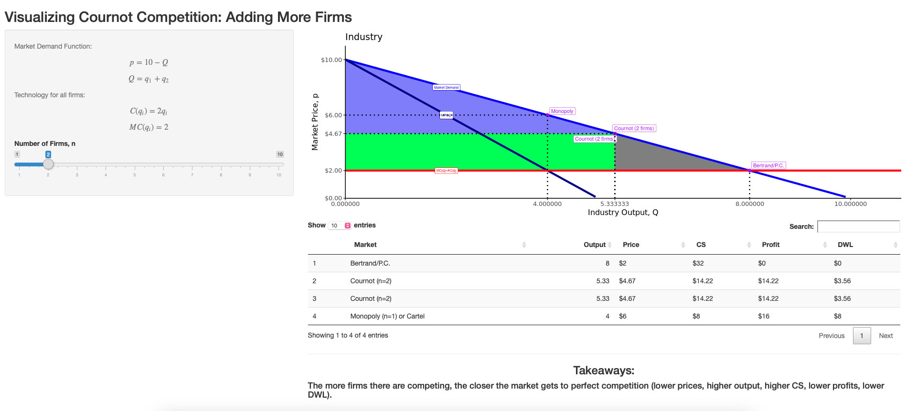
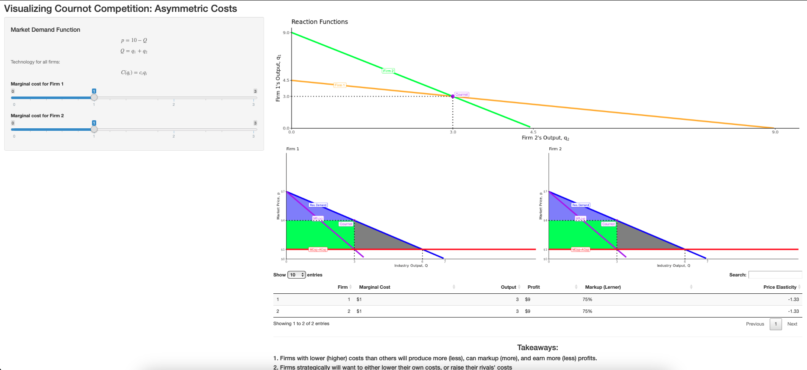
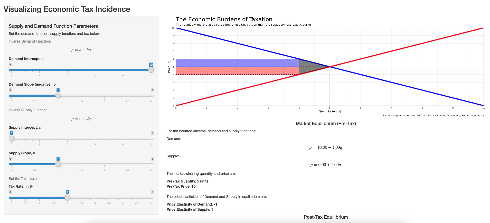
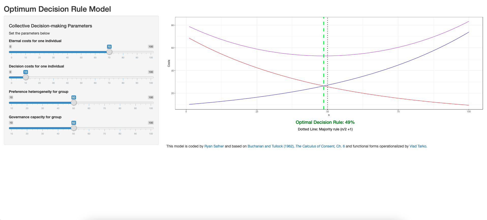
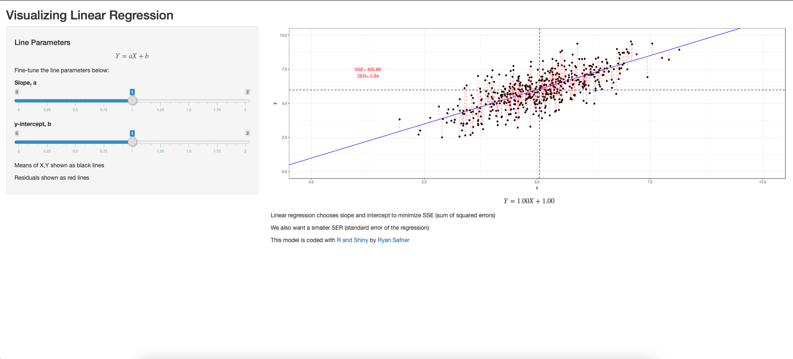
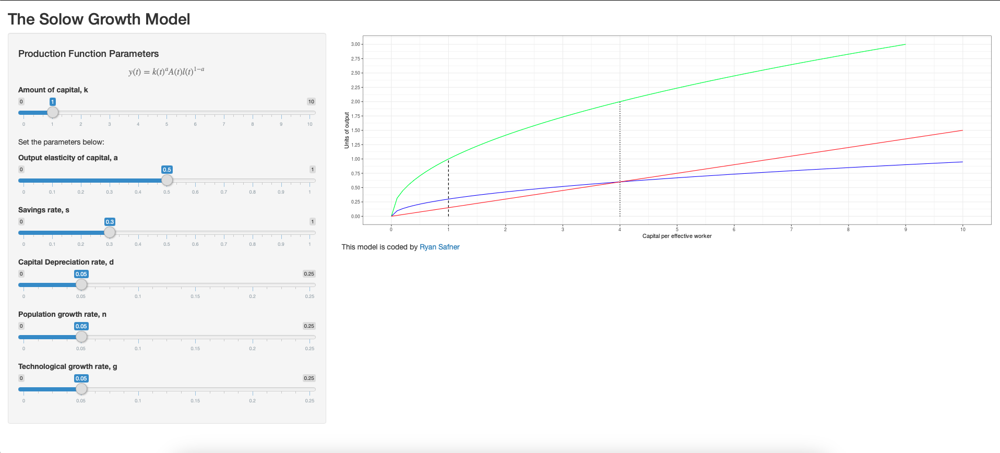

Software
This page is under construction, but most of my projects are open source and can be found in my GitHub repositories. This includes all of the materials for my course websites and course content.
Shiny Portfolio
These are largely R shiny apps that I have written to demonstrate economic concepts for my economics courses. The main purpose is to visualize concepts in action (often through a graph) and especially show how key parameters affect the outcome by allowing users to change these values and see the graph update dynamically.
Consumer Theory
Changes in Consumer’s Problem |
Industrial Organization
| Cournot Oligopoly with \(N\) Firms |  Cournot Oligopoly with Asymmetric Costs |
Microeconomics/Misc.
| Tax Incidence | |
|  Calculus of Consent Model |
Ordinary Least Squares Regression |
|  Solow Growth Model |
- Grade Calculator & Forecaster (for ECON 306; with variants for each of courses)
Economics Graphs in ggplot
I have taught a variety of economics courses and make all of my slides and course materials in R/Xaringan/Quarto. This includes a wide variety of graphs of economic concepts, all of which I have drawn in ggplot2. I will begin creating a library of different graphs and the source code to make them.
Course Websites
Since the Fall of 2019, I have made individualized websites for each of my courses. You can find links to them on my teaching page, and the repositories on my GitHub.
Hex Stickers
As part of my themeing for each of my courses, I have been making a custom hex stickers in the style that has become popular in the R/tidyverse community. You can find the image sources, outputs, and the code to render each one in this repository.